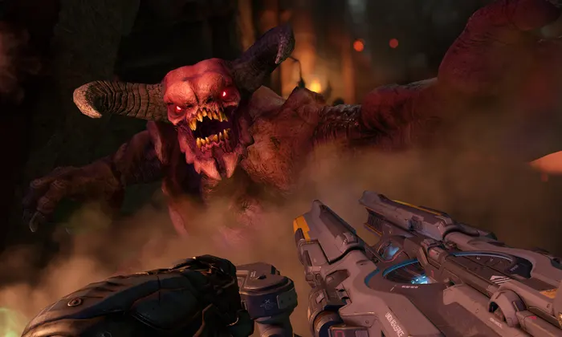
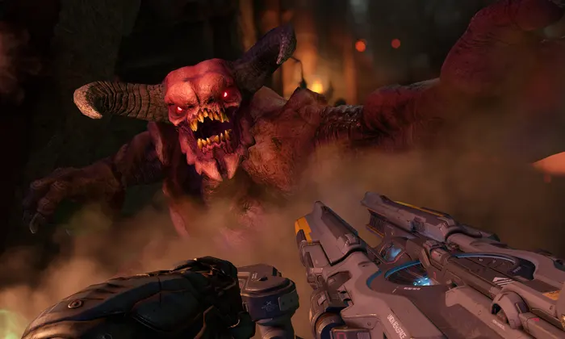
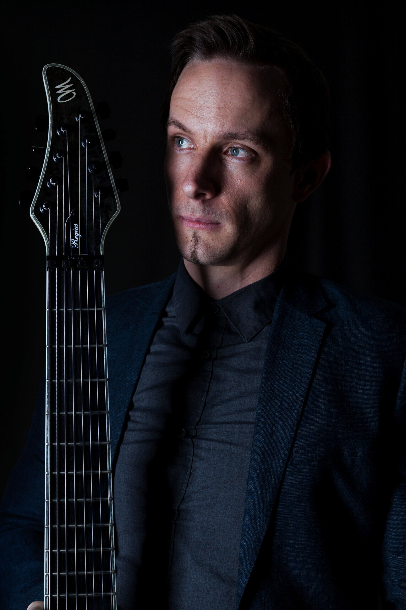
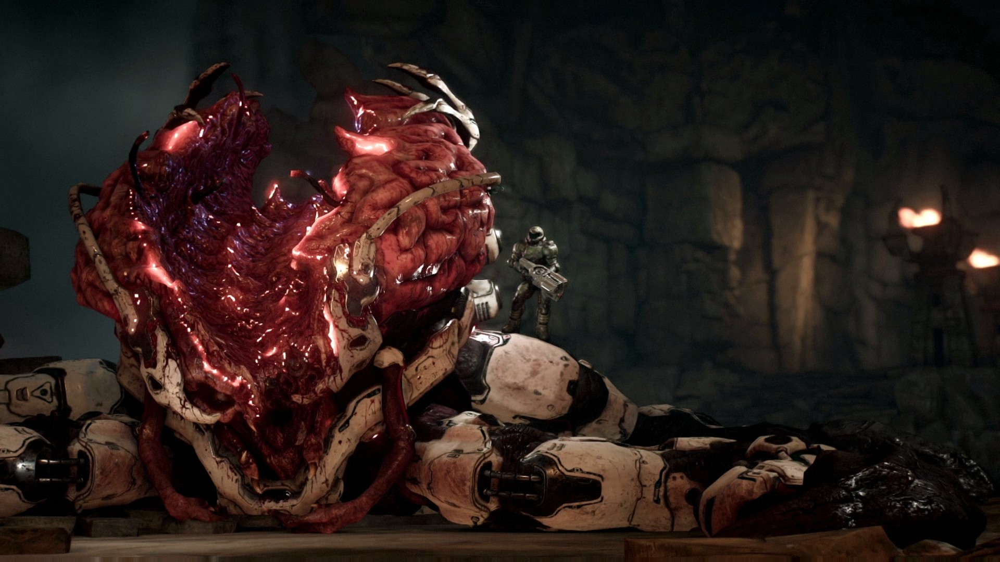
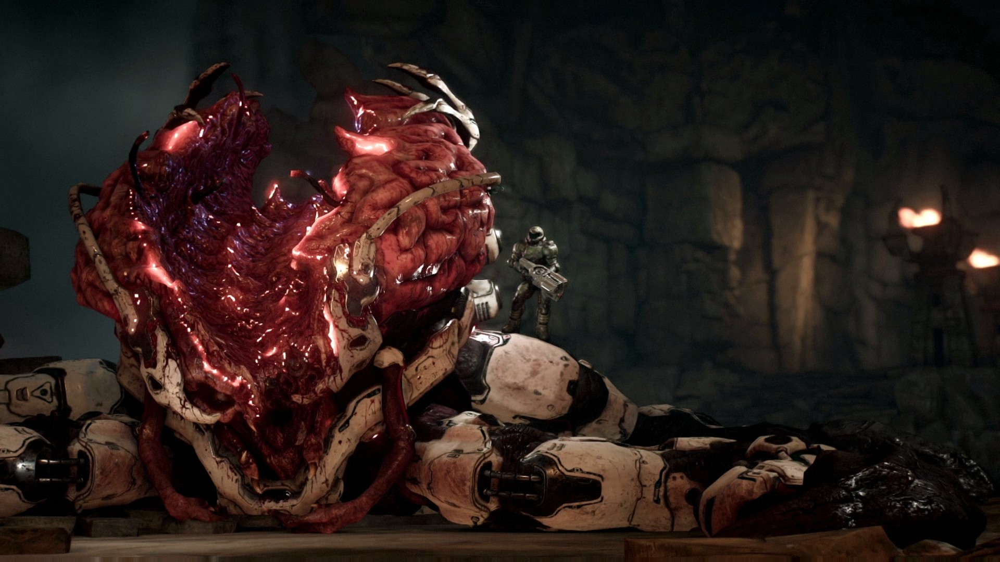
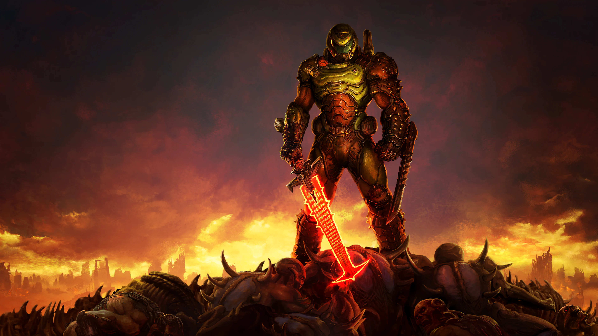

Історія гри.
 

Гра DOOM 2016 року має свою досить драматичну історію створення. Було очевидно, що
після виходу спірної, але фінансово успішної
DOOM 3 2004-го року, компанія
id Software задумалась про сіквел.
У квітні 2013 року Kotaku опублікував статтю, що викриває те, що Doom потрапив у «виробниче пекло». У
статті написано,
що новий Doom постраждав через безвідповідальність. Гра повинна була розповісти історію
появи Пекла на Землі, а сам сюжет по
кінематографічності та духу був схожим на серію Call of
Duty. Версія 2011 року була названа «посередньою, розбитою та безладною».
Дизайнер Тім Уіллітс
прокоментував це так: «Кожна гра має душу. Кожна гра має дух. У Doom 4 немає ні того, ні іншого ».
Після того, як розробка почалася повторно, Віллітс заявив, що команда, як і раніше, націлена на гру в стилі серії
Doom. Хоча було не ясно,
чи йдеться саме про Doom 4. 19 лютого 2014 року Bethesda заявили про те, що всі, хто
зробив замовлення комп'ютерної гри
Wolfenstein: The New Order, отримають доступ до бета-версії
нової частини Doom, яка тепер називалася просто DOOM. Це була закрита
бета-версія розрахованого на багато
користувачів режиму, що пройшла з 31 березня по 4 квітня 2016 року.
У червні 2014 року на виставці E3 було показано тизер-трейлер гри. У грі з'явилася система
ближнього бою та добивань, можливість
використовувати частини тіл персоналу для відкриття дверей. Сам
геймплей також виявився вільним: у грі з'явилася можливість
здійснювати подвійні стрибки та підніматися на
виступи. На виставці E3, що відбулася в червні 2015 року, була показана15-хвилинна
демонстрація геймплею.
Переважна більшість зустріла нову гру із захопленням, деякі критики назвали Doom
«занадто жорстоким»
Щоб зрозуміти, чому у них було таке враження, варто подивитись на трейлер гри, натиснувши на цей текст.
Історія саундтреку
Композитором гри виступив Мік Гордон.
Коротко про Міка повне ім'я Майкл Джон Гордон, народився 9 липня 1985 року у місті Маккай (Квінсленд, Австралія).
Почав роботу на
Pandemic Studios, потім працював на MachineGames, id Software, Arkane Studios, Slightly Mad
Studios. У 2010 році номінувався на
«Золоту котушку» від організації Motion Picture Sound Editors у номінації
«Найкращий звуковий монтаж у комп'ютерних іграх» за роботу
над грою Need for
Speed:
Shift, але не виграв нагороди.
У 2016 році Гордон створив музику до науково-фантастичного шутера від першої особи
Doom, що є продовженням гри 1993 від id Software.
За музику до цієї гри він
отримав низку нагород, зокрема нагороду церемонії нагородження D.I.C.E. Awards
укатегорії «Визначне
досягнення у творі музики», нагороду фестивалю SXSW Gaming
Awards у
категорії «Перевага у музиці», нагороду церемонії нагородження
The Game Awards,
а також номінувався на Премію Британської Академії в галузі відеоігор у категорії
Найкраща музика».
Більш детальна іінформація про композитора за посиланням
Зараз я розповім вам про суть роботи над саундтреком до DOOM 2016.
Далі зі слів Міка Гордона: мені поставили таке завдання:- Ми хочемо, щоб ти написав музику, яку ніхто до цього ніколи не чув;
- Вона має ідеально вписуватися в гру;
- Вона неодмінно має сподобатися мільйонам фанів.
Якщо ви схожі на мене, то коли ви почуєте подібне, вашим першим бажанням буде побігти у ванну, залізти під
холодний душ, звернутися
калачиком і тихо плакати, адже фанати DOOM це не фанати Disney і якщо ти не
виправдаєш їх очікувань, вони спалять твій будинок.
Більш детально про те як Мік Гордон створював музику до гри DOOM можна дізнатись з його інтерв'ю.
Для поціновувічів творчості Міка Гордона залишаю посилання на плейлист рекомендується до прослуховування в навушниках
Сюжет
Події Doom відбуваються у віддаленому майбутньому, науково-промисловому комплексі Об'єднаної Аерокосмічної
Корпорації (далі ОАК),
що знаходиться на Марсі. Група вчених, яку очолює директор ОАК і голова
комплексу доктор Семюел Хайден (чия свідомість була перенесена
в кібернетичне тіло через хвороби біологічного
характеру), виявила існування паралельного виміру. Цей вимір, зважаючи на прямі аналогії
через жителів, що
жили на ньому, був названий Пеклом. Досліджуючи цей вимір,вчені виявили «аргент-плазму» - практично невичерпне
джерело дешевої енергії, що дозволило всього за кілька років вирішити назрілу енергетичну кризу на
Землі.
Крім видобутку енергії через так звану Аргент-Вежу, що перекачує аргент-плазму з виміру Пекла, доктор
Хайден організував кілька
дослідницьких експедицій, які доставили у розпорядження землян кілька захоплених
зразків демонічних мешканців виміру та ряд артефактів
для вивчення. Одним із таких артефактів став кам'яний
саркофаг, в якому опинився захоплений демонами сплячий Кат Рока (або просто Думгай)
з комплектом
Преторіанської
броні.
Олівія Пірс, дослідниця виміру та одна з учнів Хайдена, уклала договір з мешканцями
Пекла, внаслідок чого Аргент-Вежа стала відкритим
порталом, через який ринули демони з
паралельного виміру. Протягом декількох годин науковий комплекс ОАК упав, а його мешканці були
вбиті або
перетворені на зомбі-подібних істот. У відчайдушній спробі зупинити вторгнення доктор Хайден активує саркофаг,
пробуджує
Думгая і пропонує йому взаємовигідну співпрацю. Проте Думгай хоч і погоджується
боротися з демонами, але робить це власними методами.
Вдягнувшись у свою Преторіанську броню, він прямує по захопленому комплексу, ведений штучним інтелектом комплексу
ВЕГА, і наздоганяє
Олівію Пірс біля вежі, проте та відкриває портал в Пекло за допомогою вибуху
аргент-акумулятора, куди затягує і Думгая. Пробившись із боєм
до місця телепортації, Кат Рока повертається на
Марс і прибуває до штаб-квартири доктора Хайдена. Він повідомляє Палачу про Спіральний
камінь,
здатний допомогти закрити портал і зупинити проникнення демонів на Марс. Думгай прямує до лабораторії
«Лазар» Олівії Пірс, де і
знаходиться камінь. Вивчивши камінь, він дізнається про
Колодязь, який живить портал, і клинок Горніла що здатний перекрити Колодязь.
Після сутички з величезним кібердемоном, Думгай використовує його аргент-акумулятор для телепортації в Пекло для
того, щоб розшукати
і повернути клинок Горніло. На пекельних рівнинах він знаходить і вбиває
Стражів, що охороняють меч, після чого повертається в марсіанський
комплекс. Щоб потрапити до
Колодязя, Думгаю доводиться знищити комплекс ВЕГА (при цьому він робить резервну копію штучного
інтелекту),
після чого він потрапляє до джерела демонічної енергії, де використовує Горнило.
Однак правителі Пекла спрямовують до Думгая ошукану і перетворену на Володарку Павуків Олівію Пірс.
Після фінальної битви, з якої Думгай
виходить переможцем, його насильно телепортують до штаб-квартири доктора
Хайдена. Той відбирає Горнило, яке планує використати для
відновлення видобутку аргентенергії. Щоб більше не
потрібний йому Думгай не заважав, він відправляє його в невідоме місце, запевняючи,
що вони, безперечно, ще
зустрінуться.
 

DOOM ETERNAL

Офіційний реліз відбувся в березні 2020 року. Сюжетна кампанія Doom Eternal продовжує сюжет гри Doom 2016. Через
два роки після подій, що
відбулися на Марсі, Земля майже повністю захоплена демонічними силами, а людські
втрати обчислюються мільярдами. За цей час Думгай
опановує космічну фортецю, яку він використовує як власний
штаб. На момент подій гри Кат планує знищення Культа Деаг - трьох жерців, які
керують вторгненням демонів на
Землю: Деага Нілокса, Деага Ранака та Деага Грава. Першим він простежує Нілокса, який знаходиться в
Пекельній Баржі; діставшись Нілокса, Думгай відрубує йому голову.
Головний герой використовує голову жерця, щоб потрапити на збори культу і залякати членів, що залишилися, які
заявляють, що всі люди за свої
діяння повинні бути принесені в жертву Кан Творчині — лідеру
могутньої раси Творців. Побоюючись за життя Деагів, Кан телепортує їх у
невідомі локації та попереджає Палача
про наслідки його дій.
Щоб знайти другого жерця, Думгай знаходить Небесний Локатор, згодом заряджає Локатор у Зрадника -
представника раси Аргент Д'Нур, який
зрадив свій народ в обмін на життя свого сина, але був
обдурений. Зрадник попереджає Палача, що протистояти Кані небезпечно, але при цьому
просить його про
допомогу. Принісши локатор у свій штаб, Думгай визначає місце розташування другого жерця - База
Сектантів на півночі Землі,
де закріпилися співробітники Об'єднаної Аерокосмічної Корпорації, що
перейшли на бік Пекла. Герой проникає на базу, знищує безліч демонів,
добирається до Ранака і
страчує його.
Щоб знайти третього жерця, Думгаю потрібно знайти Семюеля Хайдена, кіборга та колишнього голови ради директорів
ОАК, який після подій
минулої гри перемістився на Землю та очолив Коаліцію. Прорвавшись через орди демонів,
Думгай знаходить Хайдена, але той встиг отримати
значні пошкодження у битві з демонами, а на базу Коаліції
проникає сильний демон — Мародер, тому Кат телепортує тіло Хайдена до себе у
фортецю, а сам у
бою знищує
нового супротивника. На базі протагоніст підключає кіборга до апаратури фортеці та дізнається від нього, що
останній жрець ховається у Твердині Стражів у світі Аргент Д'Нур. Дістатися туди можна лише через
браму стародавнього марсіанського міста
Гебет, що знаходиться всередині планети.
Катприбуває на супутник
Марса Фобос, за допомогою величезної гармати BFG 10000 розкриває кору Марса і в рятувальній шлюпці
дістається
міста. Коли Кат потрапляє у Твердиню Стражів, гравцеві показують кілька його спогадів: в одному з
них з'ясовується, що Думгай, протагоніст
Doom, Doom 2 та Doom 64, після подій останньої потрапив у світ
Аргент Д'Нур і є тим самим персонажем, що і Думгай . Діставшись арени,
Думгай у бою знищує демона
Гладіатора, який захищав Деага Грава, а слідом і самого жерця.
Втративши всіх трьох жерців і втративши можливість знищити людство, Кан вирішує вдатися до іншого
плану і приступає до пробудження
Ікони Гріха. Тепер героєві потрібно перешкодити планам Кан, але
для цього йому потрібно проникнути в Урдак - світ раси Творців, єдиний
портал в який знаходиться
в Некраволі - величезній будові в Пеклі, яка виробляє аргент-енергію. Пробиваючись через орди
демонів, Думгай
дізнається, що аргент-енергія виробляється з людських душ, і навіть є головною причиною
успіху Творців. Діставшись вершини Некравола,
герой відкриває портал в Урдак. Там герой спостерігає, як Кан
намагається, використовуючи серце сина Зрадника, взяти під свій контроль
Ікону Гріха. Думгай втручається в
ритуал і знищує серце, тим самим виконавши прохання Зрадника. Ікона Гріха виходить з-під контролю і через
портал проходить на Землю. Думгай змушений піти за нею, але шлях йому перегороджує Кан. У ході битви Думгай
перемагає Кан, а потім
телепортується на Землю. Там він знаходить Ікону Гріха і в поєдинку з нею спочатку
знищує його броню, а потім і його самого. Знищення Ікони
ознаменовує кінець вторгнення та перемогу людської
раси над демонами.
Доповнення Doom Eternal: The Ancient Gods – Part One and Two.
20 жовтня 2020 року відбувся реліз першого доповнення Doom Eternal: The Ancient Gods в якому продовжився сюжет гри
після перемоги людства
над демонами.
Смерть Кан та завоювання Пеклом Урдака дали демонам шанс домінувати
у всіх вимірах, щоб відновити своє вторгнення на Землю. Щоб запобігти
цьому, Думгай разом із Семюелем
Хайденом та вченими з Комітету вирушає на пошуки та звільнення Творця Самура. Кат відправляється на об'єкт
UAC Atlantica, де знаходиться капсула із Самуром. Він завантажує Хайдена в капсулу, і з'ясовується,
що він і Самур це одна і та ж сама особистість.
Самур доручає
Думгаю повернути Сферу життя Всебатька з Пекельних Кривавих Боліт, на яких розташоване
Святилище Інгмора, щоб повернути
його у фізичну форму. Пробившись через Криваві Болота і
пройшовши Випробування Малігога, Думгай знаходить сферу Всебатька. Однак він
вважає за краще знищити її, а не
передати Самуру, і натомість витягує Сферу Житт Давота (Темного Владики) з наміром воскресити, а
потім і
знищити його фізично, що, у свою чергу, знищить усіх демонів за межами Пекла.
Думгай повертається в Урдак, осквернений наїдливістю демонів, і досягає Люмінаріума, де будь-хто, хто має сферу
Життя, може активувати його.
Проте Думгай стикається з Самуром, поглиненим його ж власним дегенеративним
перетворенням, і майже перемагає його, як його телепортує
Всебатько. Незважаючи на попередження про те, що
воскресіння Давота – Темного Владики – у фізичну форму матимуть неприємні наслідки,
Думгай воскрешає його та
виявляє, що Темний Владика – це він сам, тільки з Пекла.
Друга частина вийшла в березні 2021 року і продовжувала сюжетну лінію попереднього доповнення.
Відродивши Темного Владику, Думгай намагається вбити його, але зазнає невдачі, оскільки у Люмінаріумі не можна
проливати кров. Темний
Владика каже, що він чекатиме його в останній битві в столиці Пеклу, Імморі
,
після чого йде в портал. Щоб дістатися Іммори, Всебатько
повідомляє Палачу, що він має активувати
Небесну Браму, єдиний портал, здатний досягти міста. Всебатько відправляє Думгая до Аргента
Д'нура,
щоб забрати Примарний Кристал, який необхідний для живлення порталу. Думгай прямує до
місця розташування кристалу всередині Списа Миру,
масивного космічного корабля прибульців,
які зародили життя на Аргент Д'нур, який давно приземлився на планеті, протаранивши її поверхню
наскрізь від
полюса до полюса. На шляху герой зустрічає Зрадника, який після поразки Ікони Гріха знову прийняв своє первісне
ім'я Вален. Вален
віддає Думгаю Молот Стражів, який живиться від аргент-енергії, щоб замінити
його втрачене Горнило. Він запалює Смолоскип Королів, щоб
згуртувати решту непорочних сил
Стражів, а потім входить у Спис Миру і забирає Примарний Кристал.
З Кристалом Кат повертається на Землю, що поступово одужує від наслідків пекельного вторгнення, де знаходить
Небесну Браму і активує її.
Опинившись біля стін Іммори, герой зустрічає грізну оборону міста,
що зчисленної армії демонів. Однак йому через портали приходить на
допомогу покликана Факелом Королів армія
Стражів на чолі з Валеном. Поки головні сили Пекла зайняті ними, Кат проривається за стіну і
потрапляє на
Владики до його святилища. На арені святилища Давот та Думгай вступають у поєдинок. У процесі Чорний Владика
розповідає
Думгаю, що саме він був реальним першим богом і що Джеккад (пізніше став відомим як Пекло) був
першим виміром. Створені ним Творці,
включаючи Всебатька, зрадили його і переписали історію, щоб виставити
Всебатька як творця Всесвіту, що, своєю чергою, призвело до того,
що розлючений Давот вплинув на Творця
Самура, щоб він перетворив Думгая на Ката Року, початковою метою якого було (ненавмисно) сприяти
знищенню
Творців і Всебатька, щоб здійснити помсту Давота. Думгай вбиває Темного Владику ударом наручного клинка у груди,
вперше
заговоривши за довгі роки. Зі смертю Давота всі демони поза пекла миттєво знищуються, і Земля
остаточно звільняється від демонічного
вторгнення. Виявившись також одним із творінь Давота, Думгай падає
непритомний, перш ніж Творці запечатують його в кам'яному саркофазі у
Святилищі Інгмора. На цьому історія
закінчується.